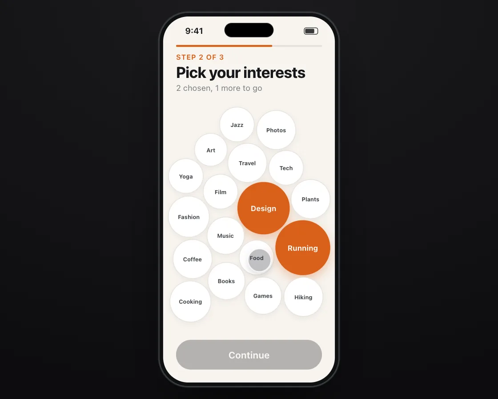

Ball collisions
Ball collisions is a DOM effect: elastic impulses along the line between centres. One plain JavaScript file with no dependencies; add it with npx motion-library add ball-collisions.

Open it live, tune it and copy the code
What is Ball collisions?
Topic bubbles huddle together, and each tap grows one on a spring so it shoulders the others aside.
How does Ball collisions work?
Bubbles are pulled gently to the middle; overlaps are separated by mass, and colliding pairs swap velocity along the line between centres, with restitution below 1.
How do I add Ball collisions to my website?
- In your project folder, run
npx motion-library add ball-collisions. It writesanimations/ball-collisions.js. Needs Node 18 or newer. - Import it and call it with a container element that has a size:
import fx from './animations/ball-collisions.js'; const stop = fx(document.querySelector('#hero')); - Call
stop()to clean up, for example when a component unmounts.
Every setting below is also a flag, so you can install it already tuned: npx motion-library add ball-collisions --count 24.
What settings can I tweak?
| Setting | Flag | Default | Range | Step |
|---|---|---|---|---|
| Bubbles | --count | 18 | 4 to 24 | 1 |
| Restitution | --restitution | 0.6 | 0 to 1 | 0.01 |
Specifications
- Renderer
- DOM (CSS and the Web Animations API)
- Category
- Springs & physics
- Dependencies
- None
- File size
- 11.2 KB, unminified
- Interactive
- Yes: it responds to the pointer
- Reduced motion
- Respects prefers-reduced-motion
- Licence
- MIT-0: use it anywhere, no credit needed
Source code
// Ball collisions: on an app's "Pick your interests" step, topic bubbles huddle together, bumping and settling. Tap one and it grows on a spring and shoulders the others aside; they collide, pass the push along and settle into a new arrangement.
// Each bubble is pulled gently toward the middle; overlapping bubbles are separated by mass and exchange velocity along the line between their centres, with restitution taking a little energy each hit. Because the push travels through real contacts, the cluster feels like a handful of soft objects, not a grid redrawing.
const PARAMS = { count: 18, restitution: 0.6 };
export default function (stage) {
const reduce = matchMedia('(prefers-reduced-motion: reduce)').matches;
const K = 'bcl', BG = 'radial-gradient(120% 100% at 50% 0%, #1b1b1e, #0d0d0f)', SC = '#f7f4ef', SBC = '#15171a';
const TOP = ['Design', 'Music', 'Travel', 'Food', 'Film', 'Tech', 'Books', 'Art', 'Running', 'Coffee', 'Photos', 'Games', 'Yoga', 'Plants', 'Cooking', 'Jazz', 'Hiking', 'Fashion', 'Podcasts', 'Science', 'Dogs', 'Cycling', 'Theatre', 'Space'];
const n = Math.max(4, Math.min(TOP.length, Math.round(PARAMS.count))), GROW = 1.32;
const CSS = `.bcl-hd{position:absolute;left:20px;right:20px;top:52px}.bcl-hd small{font-size:11px;font-weight:650;color:#d9601a;letter-spacing:.06em;text-transform:uppercase}.bcl-hd b{display:block;font-size:24px;font-weight:740;letter-spacing:-.02em;margin-top:2px}.bcl-hd p{margin:3px 0 0;font-size:12.5px;color:#7a7d82}
.bcl-bar{position:absolute;left:20px;right:20px;top:44px;height:3px;border-radius:2px;background:#e7e2da}.bcl-bar i{display:block;width:66%;height:100%;border-radius:2px;background:#d9601a}
.bcl-b{position:absolute;left:0;top:0;border-radius:50%;background:#fff;box-shadow:inset 0 0 0 1.2px #e3ded6,0 3px 10px rgba(80,40,10,.07);display:grid;place-items:center;font-size:11.5px;font-weight:650;color:#33373c;will-change:transform;transition:background .25s cubic-bezier(.23,1,.32,1),color .25s,box-shadow .25s}
.bcl-b.on{background:#d9601a;color:#fff;box-shadow:0 6px 16px rgba(217,96,26,.35)}
.bcl-go{position:absolute;left:20px;right:20px;top:500px;height:46px;border-radius:23px;background:#15171a;color:#fff;display:flex;align-items:center;justify-content:center;font-size:14.5px;font-weight:650;opacity:.3;transition:opacity .3s cubic-bezier(.23,1,.32,1)}.bcl-go.ok{opacity:1}`;
const HTML = `<div class="bcl-bar"><i></i></div><div class="bcl-hd"><small>Step 2 of 3</small><b>Pick your interests</b><p class="bcl-cnt">Choose 3 or more</p></div>${TOP.slice(0, n).map(t => `<div class="bcl-b">${t}</div>`).join('')}<div class="bcl-go">Continue</div>`;
// ── phone shell: a 280 × 580 phone drawn in CSS, scaled to fit the stage (screen is 266 × 566)
const root = document.createElement('div');
root.className = K + '-root';
root.innerHTML = `<style>
.${K}-root{position:absolute;inset:0;overflow:hidden;background:${BG};font-family:system-ui,-apple-system,"Segoe UI",sans-serif;color:#15171a;user-select:none;-webkit-user-select:none}
.${K}-ph{position:absolute;left:50%;top:0;width:280px;height:580px;border-radius:46px;background:#0f1113;box-shadow:inset 0 0 0 1.5px #3a3f46,0 0 0 1px rgba(255,255,255,.13),0 40px 80px -30px rgba(0,0,0,.8);transform-origin:50% 0}
.${K}-sc{position:absolute;inset:7px;border-radius:39px;overflow:hidden;background:${SC};isolation:isolate;touch-action:none}
.${K}-is{position:absolute;left:50%;top:17px;width:76px;height:22px;margin-left:-38px;border-radius:12px;background:#000;z-index:30}
.${K}-sb{position:absolute;left:0;right:0;top:0;height:44px;padding:0 26px 0 34px;display:flex;align-items:center;justify-content:space-between;font-size:13px;font-weight:650;z-index:29;pointer-events:none;color:${SBC}}
.${K}-sb i{width:22px;height:11px;border-radius:3.5px;border:1.2px solid currentColor;box-sizing:border-box;padding:1px;opacity:.85}.${K}-sb i:after{content:"";display:block;height:100%;width:78%;background:currentColor;border-radius:1.5px}
.${K}-f{position:absolute;left:0;top:0;width:34px;height:34px;margin:-17px 0 0 -17px;border-radius:50%;background:rgba(60,60,67,.32);box-shadow:0 0 0 1.5px rgba(255,255,255,.85),0 4px 12px rgba(0,0,0,.18);z-index:40;pointer-events:none;opacity:0;transition:opacity .2s}
${CSS}
</style><div class="${K}-ph"><div class="${K}-sc"><div class="${K}-sb"><span>9:41</span><i></i></div>${HTML}<div class="${K}-f"></div></div><div class="${K}-is"></div></div>`;
stage.append(root);
const $ = s => root.querySelector('.' + K + '-' + s), $$ = s => [...root.querySelectorAll('.' + K + '-' + s)];
const phone = $('ph'), scr = $('sc'), fingerEl = $('f');
let scale = 1;
const fit = () => { const W = stage.clientWidth, H = stage.clientHeight; scale = Math.min(H * 0.94 / 580, W * 0.9 / 280); phone.style.transform = `translate(-50%, ${(H - 580 * scale) / 2}px) scale(${scale})`; };
const ro = new ResizeObserver(fit); ro.observe(stage); fit();
const finger = (x, y, on, press) => { fingerEl.style.opacity = on ? 1 : 0; fingerEl.style.transform = `translate(${x}px,${y}px) scale(${press ? 0.84 : 1})`; };
// a damped spring step (semi-implicit Euler, 4 substeps), which settles instantly under reduced motion, and Apple's rubber-band curve
const spring = (s, to, k, c, dt) => { if (reduce) { s.x = to; s.v = 0; return; } for (let i = 0; i < 4; i++) { const h = dt / 4; s.v += (-k * (s.x - to) - c * s.v) * h; s.x += s.v * h; } };
const rubber = (o, d, c) => o * d * c / (d + c * Math.abs(o));
// the simulated finger: keys are [ms, x, y, state(0 hidden, 1 hover, 2 pressed), linear?]; real touches take over for 2.5 s
const track = (keys, t) => { let i = 0; while (i < keys.length - 2 && t >= keys[i + 1][0]) i++; const a = keys[i], b = keys[i + 1]; let u = Math.min(1, Math.max(0, (t - a[0]) / ((b[0] - a[0]) || 1))); if (!a[4]) u = u < .5 ? 4 * u * u * u : 1 - Math.pow(-2 * u + 2, 3) / 2; return [a[1] + (b[1] - a[1]) * u, a[2] + (b[2] - a[2]) * u, a[3]]; };
const U = { on: false, x: 0, y: 0, last: -1e9 };
const toLocal = e => { const r = scr.getBoundingClientRect(); return [(e.clientX - r.left) / scale, (e.clientY - r.top) / scale]; };
const pd = e => { U.on = true; [U.x, U.y] = toLocal(e); U.last = performance.now(); try { scr.setPointerCapture(e.pointerId); } catch (_) {} };
const pm = e => { if (!U.on) return; [U.x, U.y] = toLocal(e); U.last = performance.now(); };
const pu = () => { if (U.on) { U.on = false; U.last = performance.now(); } };
scr.addEventListener('pointerdown', pd); scr.addEventListener('pointermove', pm); scr.addEventListener('pointerup', pu); scr.addEventListener('pointercancel', pu);
const unlisten = () => { scr.removeEventListener('pointerdown', pd); scr.removeEventListener('pointermove', pm); scr.removeEventListener('pointerup', pu); scr.removeEventListener('pointercancel', pu); };
let T0 = performance.now(), wasUser = false;
const input = (now, keys, loop) => {
if (now - U.last < 2500) { wasUser = true; finger(0, 0, false); return { x: U.x, y: U.y, down: U.on, t: -1, n: 0 }; }
if (wasUser) { wasUser = false; T0 = now; }
const t = (now - T0) % loop, [x, y, st] = track(keys, t);
finger(x, y, st > 0, st === 2);
return { x, y, down: st === 2, t, n: Math.floor((now - T0) / loop) };
};
const els = $$('b'), cnt = $('cnt'), go = $('go');
const CX = 133, CY = 314, X0 = 8, X1 = 258, Y0 = 140, Y1 = 490;
let seed = 7; const rnd = () => (seed = (seed * 16807) % 2147483647) / 2147483647;
const B = els.map((el, i) => {
const r0 = Math.min(34, 21 + TOP[i].length * 1.6), a = i * 2.4, d = 30 + i * 7;
const R = r0 * GROW; el.style.width = el.style.height = 2 * R + 'px'; el.style.margin = `${-R}px 0 0 ${-R}px`;
return { el, r0, R, rs: { x: r0 * 0.7, v: 0 }, on: false, x: CX + Math.cos(a) * d * 0.8, y: CY + Math.sin(a) * d, vx: (rnd() - 0.5) * 120, vy: (rnd() - 0.5) * 120 };
});
// ghost finger: tap three bubbles, one at a time; the keys are re-aimed at the bubbles every frame because they move
const taps = [[900, 0], [2100, 8], [3300, 3]];
const keys = [[0, 133, 540, 0]];
taps.forEach(([t]) => keys.push([t - 450, 0, 0, 1], [t - 150, 0, 0, 1], [t, 0, 0, 2], [t + 150, 0, 0, 1]));
keys.push([3800, 210, 520, 0], [7400, 133, 540, 0]);
let dirty = true;
const sim = dt => {
const e = PARAMS.restitution;
for (const b of B) {
spring(b.rs, b.on ? b.r0 * GROW : b.r0, 320, 2 * Math.sqrt(320) * 0.78, dt);
b.vx += (CX - b.x) * 2.2 * dt; b.vy += (CY - b.y) * 2.2 * dt; // a gentle pull to the middle
const damp = Math.exp(-2.4 * dt); b.vx *= damp; b.vy *= damp;
b.x += b.vx * dt; b.y += b.vy * dt;
const r = b.rs.x;
if (b.x < X0 + r) { b.x = X0 + r; b.vx = Math.abs(b.vx) * e; } if (b.x > X1 - r) { b.x = X1 - r; b.vx = -Math.abs(b.vx) * e; }
if (b.y < Y0 + r) { b.y = Y0 + r; b.vy = Math.abs(b.vy) * e; } if (b.y > Y1 - r) { b.y = Y1 - r; b.vy = -Math.abs(b.vy) * e; }
}
for (let it = 0; it < 3; it++) for (let i = 0; i < n; i++) for (let j = i + 1; j < n; j++) {
const a = B[i], b = B[j], dx = b.x - a.x, dy = b.y - a.y, d = Math.hypot(dx, dy), min = a.rs.x + b.rs.x + 3;
if (d === 0 || d >= min) continue;
const nx = dx / d, ny = dy / d, ma = a.rs.x * a.rs.x, mb = b.rs.x * b.rs.x, over = min - d;
a.x -= nx * over * mb / (ma + mb); a.y -= ny * over * mb / (ma + mb); b.x += nx * over * ma / (ma + mb); b.y += ny * over * ma / (ma + mb);
const rel = (b.vx - a.vx) * nx + (b.vy - a.vy) * ny;
if (rel > 0) continue; // already separating
const jImp = -(1 + e) * rel / (1 / ma + 1 / mb);
a.vx -= jImp * nx / ma; a.vy -= jImp * ny / ma; b.vx += jImp * nx / mb; b.vy += jImp * ny / mb;
}
};
let wasDown = false, prevN = 0, last = performance.now(), raf;
const pick = (x, y) => { let best = null, bd = 1e9; for (const b of B) { const d = Math.hypot(b.x - x, b.y - y) - b.rs.x; if (d < bd) { bd = d; best = b; } } return bd < 6 ? best : null; };
function frame(now) {
const dt = Math.min(0.025, (now - last) / 1000); last = now;
taps.forEach(([t, i], j) => { const b = B[Math.min(i, n - 1)]; for (let q = 1; q <= 3; q++) { const kk = keys[1 + j * 4 + q]; kk[1] = b.x + 4; kk[2] = b.y + 3; } const k0 = keys[1 + j * 4]; k0[1] = b.x + 30; k0[2] = b.y + 60; });
const f = input(now, keys, 7400);
if (f.t >= 0 && f.n !== prevN) { prevN = f.n; B.forEach(b => b.on = false); dirty = true; }
if (f.down && !wasDown) { const b = pick(f.x, f.y); if (b) { b.on = !b.on; b.rs.v += b.on ? 40 : -20; dirty = true; } }
wasDown = f.down;
const chosen = B.filter(b => b.on).length;
// reduced motion: run the physics off-screen until the cluster has settled and show only the result
if (!reduce) sim(dt); else if (dirty) { dirty = false; for (let i = 0; i < 600; i++) sim(1 / 60); }
for (const b of B) { b.el.style.transform = `translate(${b.x}px,${b.y}px) scale(${b.rs.x / b.R})`; b.el.classList.toggle('on', b.on); }
cnt.textContent = chosen ? `${chosen} chosen${chosen < 3 ? `, ${3 - chosen} more to go` : ''}` : 'Choose 3 or more';
go.classList.toggle('ok', chosen >= 3);
raf = requestAnimationFrame(frame);
}
raf = requestAnimationFrame(frame);
return () => { cancelAnimationFrame(raf); ro.disconnect(); unlisten(); root.remove(); };
}